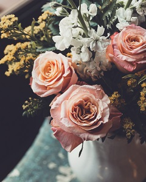

Seasonal Deals and Information
Special assortments are ready just in time for Wedding Season this winter! Start your special day off with a bundle of beautiful Carnations, Roses, or Gardenias. We offer various colored flowers to match the celebration! Book ahead to recieve a disount and get 10% off your next order!

We have a great selection of other various assortments that are pre-made for walk-ins. These include but are not limited to: Sunflowers, Tulips, Orchids, Lavender, and Peonys. For a limited time only, With these selected few, recieve a free flower for every 5 flowers bought.